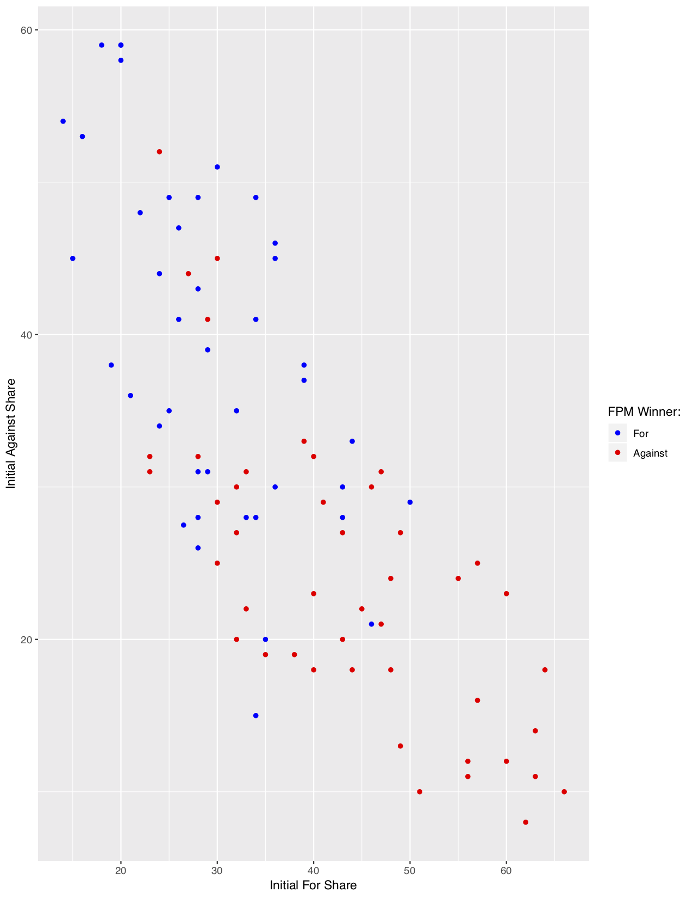
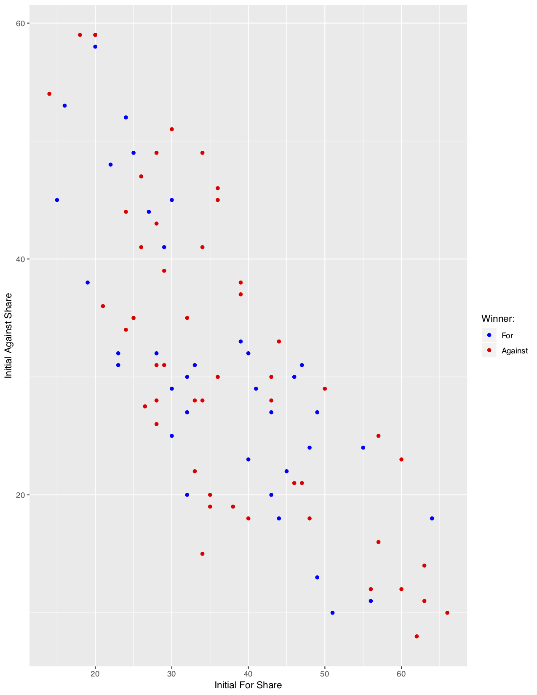
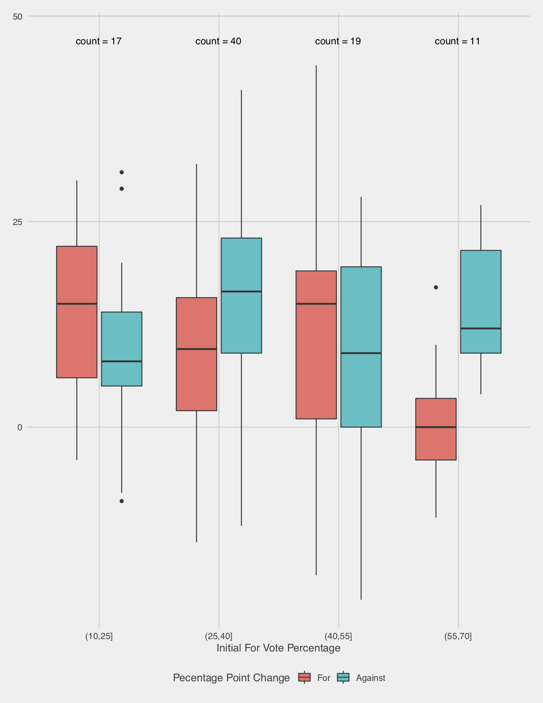
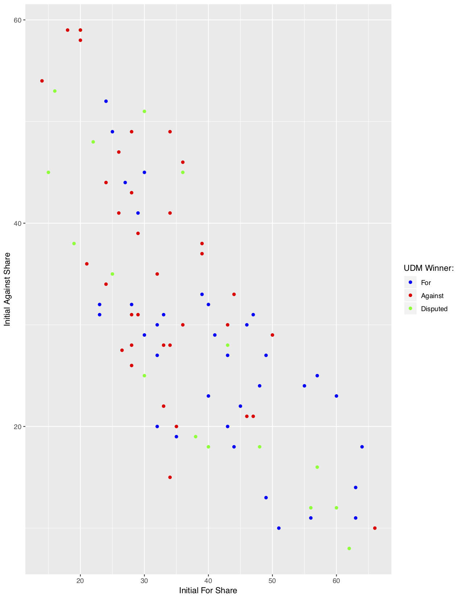
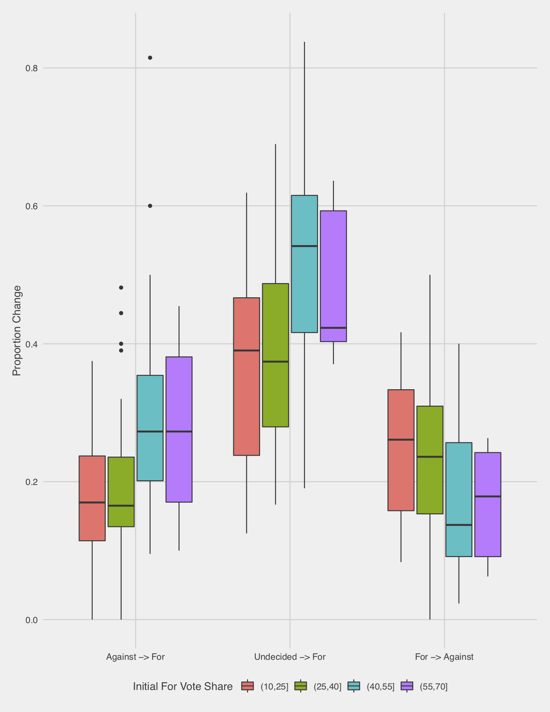

Winning a Debate: Insights from "Intelligence Squared"
How does one measure the winner of a debate? If the debate itself is the focus, it’s wholly unsatisfying to just tally up the opinions of the viewers, as that solely reflects the prior beliefs of the audience. “Intelligence Squared” is an excellent podcast which teaches policy through moderated debate. A resolution is proposed (e.g. “Affirmative Action does more harm than good”), and two teams of two experts argue the issue in a structured setting. Many other programs aim for balance with a halfhearted attempt to pay lip service to the opposing side (without truly believing it), so it’s refreshing to hear passionate and informed argument from both sides of the aisle. If one side cites a misleading statistic, their opponents are ready to actually call them out on it, penalizing the lazy rhetorical tactics that plague discourse in an echo chamber.
The focus of the program is the debate itself, but some nominal winner must still be declared. This is determined using a simple formula. The audience is polled before and after the debate (For, Against, or Undecided on the issue), and the side which gains the most votes is the winner. To be clear, I do not think that this method of declaring a winner is a particularly important to the show, nor do I think any listeners actually consider the swings of audience opinion to be the final say on the matter. But it’s still interesting to consider whether or not this is a reasonable way to declare a debate winner. And more broadly, what can the results of a debate tell us about the way that people make up their minds on polarizing issues? Much has been written about the politically charged climate of the present, and the ways in which the media we consume is entrenching us in our positions, leading to static and polarized political views.
It turns out that Intelligence Squared doesn’t just measure the change in support for each side before and after the debate, for events since 2012 it also measured the individual shifts between each category (i.e. “Undecided before and For after”, or “For before and Against after”). This provides a small but insightful dataset looking at the ways in which minds can change on a polarizing issue in the course of an hour.
What does it mean to “win” a debate?
Intelligence Squared declares their nominal winner with a simple metric, measuring whether the For or Against side had the largest absolute percentage point shift in support from the pre debate to the post debate audience poll. Thus, if the For side originally had 40% support and the Against side 35% support before the debate, and after the debate the For side had 45% support and the Against side had 43% support, the 8 percentage point increase of the Against side trumps the 5 percentage point increase of the For side, and the Against side wins the night. We will refer to this method for determining a victory as the ISM (Intelligence Squared Metric).
The problem with this approach stems from the fact that there are a variety of ways that opinions could shift between the three camps. This is related to both its usage of absolute percentage point change (with no reference to the relative switch), as well as the presence of the undecided voters.
I stumbled upon this excellent post by whuber on StackExchange. I have the pleasure of knowing whuber in person, and in characteristic fashion he gives a thorough and insightful analysis of the ways in which we can have different shifts in support (among the different groups) for the same absolute result, in ways that make determining the winner quite difficult. We cite a simple example proposed by whuber in this post.
Consider a situation where originally 20% are For, 60% are Against, and 20% are undecided (we will write this as a vector \((.2, .6, .2)\)). After the debate, the vector of support is \((.3, .4, .3)\). Under the ISM, this is a clear and decisive win for the For side, as they gained 10 percentage points of support, while the Against side lost 20 percentage points. However, there are a variety of between-group opinion switches that could lead to this result. whuber suggests that we write these between-group switches in a 3x3 transition matrix, where the \(ij\)th element represents the percent of the original supporters for the \(i\)th camp before the debate are supporters of the \(j\)th camp after the debate (with For as 1, Against as 2, and Undecided as 3). Then, this represents a plausible transition matrix for our final result.
\[ \mathbb{A} = \left( \begin{array}{ccc} 0.32 & 0.29 & 0.32 \\ 0.36 & 0.42 & 0.36 \\ 0.32 & 0.29 & 0.32 \\ \end{array} \right). \]
As whuber explains,
Here, 36% of the “Fors” changed to the other side while only 29% of the “Against” changed to the opposite opinion. Moreover, slightly more of the undecideds (36%) vs 32%) came out “against” rather than for. Although their numbers in this audience decreased, we have a situation (reminiscent of Simpson’s Paradox) in which the “Against” faction clearly won the debate!
We have a possible outcome where Intelligence Squared would declare the “For” side a decisive winner, but in terms of percentage shifts, the “Against” side was more persuasive at both convincing Undecideds to join their side, and convincing those with a prior opinion to change their viewpoint. This clarifies the challenge inherent in determining the winner of a debate. When one side is initially quite unpopular, they have a larger population of possible voters that they can woo, which makes their proportional gains much higher in absolute terms. There’s certainly a plausible argument that absolute shifts in support should be the most important factor in determining a winner, but this does make the situation more complex. And it gets even messier in cases where the sub-group switches don’t necessarily agree. We might see one side sway a much larger proportion of the Undecided voters, while being less successful at convincing those from the other side to switch. This could leave us without a conclusive winner.
How has this worked in practice?
Looking at the results of the Intelligence Squared debates in reality, we see that the majority of results are uncontroversial. and there is little doubt which side was more convincing. In total, we gather the results from 88 debates from the Intelligence Squared website, with the process described here, and the unpolished scraped dataset here.
The first winning metric we consider is the Intelligence Squared Metric (ISM), which measures shift in absolute percentage of support. We next consider the Undisputed Metric (UDM), which uses the proportional switching outlined above, and only assigns a winner when one side both convinces a greater proportion of Undecided voters to join their side, as well as a greater proportion of the other side to switch their opinion. In cases when these do not agree, no winner is declared.
Thus the first question is whether there are cases where the UDM declares a winner which is the reverse of the ISM, like the toy example outlined above by whuber. It turns out that this is not an idle concern, and in fact there have been six debates with this conflicting result.
| Title | Date | Pre %: For | Pre %: Against | Pre %: Undecided | Abs. % \(\Delta\): For | Abs. % \(\Delta\): Against | ISM Winner | UDM Winner |
|---|---|---|---|---|---|---|---|---|
| Trigger Warning: Safe Spaces Are Dangerous | 06/23/2018 | 57 | 25 | 18 | -1 | 10 | Against | For |
| Preserve Net Neutrality: All Data is Created Equal | 04/17/2018 | 60 | 23 | 17 | 0 | 8 | Against | For |
| Legalize Assisted Suicide | 11/03/2014 | 63 | 11 | 26 | 4 | 11 | Against | For |
| Break up the Big Banks | 10/16/2013 | 35 | 19 | 46 | 13 | 20 | Against | For |
| Cutting the Pentagon’s Budget is a Gift to our Enemies | 06/19/2013 | 20 | 58 | 22 | 9 | 8 | For | Against |
| The GOP must Seize the Center or Die | 04/17/2013 | 63 | 14 | 23 | 2 | 14 | Against | For |
This is not surprising when the absolute percentage changes are so close (such as in “Cutting the Pentagon’s budget…”), but the other debates show some wildly divergent results. We even see an example of whuber’s hypothesized situation. In the “Trigger Warnings” debate on 06/23/2018, we see the For camp lose support, the Against camp gain support, and yet we see that the For camp was declared the winner by the UDM. The transition matrix for this debate is shown here
\[ \text{Trigger Warnings Debate: }\left( \begin{array}{ccc} 0.67 & 0.44 & 0.39 \\ 0.26 & 0.56 & 0.33 \\ 0.07 & 0.00 & 0.28 \\ \end{array} \right). \]
The For camp was able to lure 39% of the Undecided voters, compared to only 33% by the Against camp. And the For side was able to convince 44% of the Against camp to change their minds, while the Against camp convinced only 26% of the For camp to swap. And yet the For camp lost support, while the Against camp gained support. This can easily be explained by the initial disparity in popularity. The For side began with 57% of the vote, so while they convinced a larger proportion of Undecided and Against voters to change their view, they had a minority of the audience who were even available to sway.
This is a perfect example of the issue, because it feels fundamentally wrong to declare the winner of the debate to be a side that lost popularity during the course of the night. This cousin of Simpson’s Paradox defies our intuition, where we want relative and absolute changes to point in the same direction. I think there’s an argument for both sides. The issue with using the UDM (with subgroup proportional shifts) is that there’s an inherent expectation that a debate will shift opinions towards the center. If one group starts overwhelmingly popular, and both sides sway the proportional amount of people to their side, then that side will tend to lose share. It doesn’t make much sense that we would expect any evenly matched debate to bring public opinion towards a 50/50 split, but a series of dead even debates (as measured by the UDM) would push the audience towards that equilibrium point. And yet, we think of the goal of debates as being one of persuasion. And so it makes little sense to declare one side the winner because they had a larger possible audience to persuade, even if their marginal rate of persuasion was inferior.
Are there obvious issues in the original metric?
There is no singular way to measure the efficacy of these metrics, and it ultimately comes down to our subjective intuition about what it means to “win” a debate. However, we can reasonably agree on some criteria that we intuitively find “fair”. Generally, we want a debate to be a plausibly even playing field from the start. An even more intuitive metric would simply be the popularity of each motion after the debate (which we refer to as the Final Popularity Metric [FPM]), but we reject this approach because it so obviously favors the side that is initially popular with the audience. It’s then worth it to consider whether the ISM is biased in ways that clash with our intuition.
The most obvious plausible bias is that of the initial popularity of each position. In fact, this is why we do not simply use the FPM , so it is perhaps instructive to consider what such bias looks like. We plot the initial popularity of the For and Against positions below, and use color to denote the final winner by the FPM (i.e. which position was ultimately more popular with the audience). Exactly as we’d expect, there is a heavy bias to the initial starting positions. There are a few instances where a particularly large swing allows for the initially unfavorable position to pull out a win, but generally the winner is determined simply by initial popularity, and the processs of the debate itself is largely irrelevant.

When we consider the same plot colored by the standard ISM results, we see a much more promising picture. On first glance, this adjustment does a plausible job of removing the bias from initial popularity. We theorized that the ISM might be punishing to sides that begin with overwhelming popularity, becuase they have so many fewer people that they can convert to their side (and an increase from 90 to 95 percent popularity might only be 5 percentage points, but represents a massive 50% decrease in those who don’t support that side). However, in practice, most positions start at a popularity between 20% and 50%, so those extreme examples just aren’t as concerning. And within that range, the naked eye doesn’t detect any overwhelming patterns of bias.

One plausible trend that might stand out lies in the bottom right of the chart, where we do note that debates with an initially extremely high For share tended to be won by the Against side. Of the seven debates where the For side began with at least 60% vote share, the Against side won six contests and For won only one. This is a very small sample, but it does fit our intuition, and thus the lack of bias might simply stem from the fact that it is only observed in the extreme starting positions, which occur rarely. We do note that the reverse extreme (where the Against side has initally dominant popularity) does not show any such obvious trend, which makes this slightly less troubling.
The prior plot only considers the binary outcome under the ISM, but we are not solely concerned with the effect on the binary result, but rather the effect on percentage point change, which can manifest in a shift of binary result. Thus, it must be more illsutrative to break down the effect further. We create 4 bins of debates based on a partition of the initial popularity of the For camp. For each bin, we consider a box plot of the percentage change that the debate creates for the For camp along with the percentage change for the Against camp, which provides a more precise analysis. As before, the picture is muddled until we consider the final bin (debates where the For side enjoyed a 55% or more share of the support), where almost all of the changes to the For side were lesser than the changes for the Against side. This is a much more persuasively troubling result than the simple results observed above, but the sample remains small (only 11).

We observe a peculiar result, but are unsure whether it could simply result from random chance. This question of statistical significance is at the heart of the study of statistics. However, it is not immediately clear to me which tool is suited to the situation. A simple comparison of the mean changes of these different bins seems deeply problematic. It is unclear that we can make any plausible assumptions about the distribution of the changes of votes. Crucially, the changes to the For vote share are not independent to the changes to the Against vote share. And there is a clear confounding variable, where change to For vote share is going to be effected not simply by initial For vote, but by the initial number of undecideds (we certainly have not proven this, but common sense says that an undecided voter is easier to persuade than one who believes in the opposing viewpoint). More broadly, any such test from here is problematic in the way that Exploratory Data Analysis tends to be. We have not rigorously predefined our research question based on a scientific hypothesis, we are simply confirming our vague intuition that starting vote share introduces bias. Thus, a test based on this particular binning creates some form of bias. If we explored deep enough into the data, eventualy we must have found something similarly intriguing.
We can use a nonparametric test to examine the implausibility of the observed trend, but we must keep the bias mentioned above closely in mind. Exploratory data analysis minimizes this problem by relying on standardized statistical tests which answer broad questions. A nonparametric test that examines the statistical implausibility of the difference observed in the arbitrary binning we have chosen above is far less robust. An example statistical test is the Kruskal-Wallis Rank test. This nonparametric test simply considers the ranked values of the observed data, and considers the statistical probability that we might observe such an extreme disparity as what occurs in our sample. This provides a statistically rigorous result without reliance on assumptions, but the issue is that it provides such an answer to a deeply narrow question. In our case, we could consider the Kruskal-Wallis test with the changes to the For vote for two groups: those with initial share of 55+%, and those with lesser initial share. In this case, we observe a test statistic of 8.1929, and a p-value of 0.42%. Phrased in statistical language, this means that if our two groups generated changes to the For vote share with the same distribution, there would be less than a one in two hundred chance that we observe at least as large a disaparity in the ranks of the observed values.
The problem is that the question this answers is deceptively narrow. It cannot make any bold claims about any debates that begin with 55+% vote share or fewer, but only the ones which we observe. If we had an ideal sample of such debates, and considered those above and below this threshold, then such a statement would be extremely powerful. Instead, our initial sample size of 11 debates means it is quite plausible that there are other fundamental differences in these samples.
In short, the Kruskal-Wallis test demonstrates the statistical significance in the difference of the distribution of these samples, but makes no claim as to why. And we have little conclusive proof that it is the prior vote share of the For side that creates this disparity, it could be any number of differences between the populations that provides the root cause.
This is an obviously unsatisfying result, but in the name of intellectual honesty I hesitate to any bolder claim. Qualitatively, I do think that the sum of this analysis makes it very likely that our intuition that those with an initially high For vote share experience notable disadvantage for winning the debate under the metric used by Intelligence Squared. However, these extreme cases come up very rarely, and the ISM seems quite defensible for the purposes of the podcast.
Alternative Metrics
It is of course interesting to consider other metrics that one could use. Outlined above, we consider the Undisputed Metric (UDM), which instead considers the percentage that switch between each camp during the debate. The UDM declares a winner if that side converts both a greater percentage of the other side to swap, as well a greater percentage of the Undecided camp to join theirs. In cases where there is disagreement (e.g. the For side convinces a greater proportion of Against voters to join their side than vice versa, but the Against side convinces a greater proportion of Undecided voters), the UDM simply declares that there is no clear winner. The UDM operates under a fundamentally different mindset: that what matters is not the percentage point change, but the proportion of voters who you sway. As noted above, it is perfectly possible for the UDM to declare the opposite winner to the ISM (this is particularly likely to happen in those cases where one side has initially extreme vote share). We first consider another plot of the debate result under the UDM compared to the initial For and Against vote shares.

Similar to the ISM, under the UDM it seems the initial popularities are overly determinative of the final result. But we do observe something of a reverse trend: if an initial side has at least 50% share of the starting vote, now they nearly always win. We again break down this effect by considering the voting shifts for debates binned by their initial For vote share. Now, our object of interest is not simply the percentage point change, but a variety of changes (in this plot, we consider the proportion of initially Against voters who shift to For, Undecided persuaded to join the For camp, and initially For voters who defect to the against side). Note that the coloring is done using our initial For popularity partition, unlike above.

This reflects the effects expected from our initial results. Initially high For popularity tends to imply that they will persuade a higher proportion of Against voters, and that a lower proportion of For voters will defect to Against, while the results for Undecided voters are decidedly muddled. This is what we would expect. A high initial For vote share implies a lower Against vote share, so converting a small number of Against voters shows a lower percentage point change, but a large proportional change. The movement of undecided voters does not follow this pattern.
Summary
The question of which side is the winner in a debate is far from straightforward. Our intuition tells us that it should depend on the performance of the debaters, and not simply reflect the initial position of the audience. This is why we do not conduct a simple exit poll on the popularity of each side, which the data shows is massively biased towards the initial popularity of the sides. Unsurprisingly, audience members have extremely strong priors on these hotly contested issues, and an hour of debate does not ovewhelm a lifetime of thought on the matter. Intelligence Squared adjusts for this bias by polling the audience before the debate, and considering the percentage point change that each side observe. We hypothesize that this may instead be biased to disfavor initially popular sides. This appears to occur in the observed data, but extreme initial popularity is relatively rare, so it is hard to precisely prove the magnitude of this effect. In fact, the data shows that this metric seems to be a reasonably fair benchmark in practice. We outline one alternative for determining the winner, which is to consider the proportional changes among each sides. Counterintuitively, it is perfectly possible for one side in a debate to lose under the Intelligence Squared system, and yet persuade a greater proportion of both Undecideds and the other side to defect. In fact, we observe this scenario in a number of debates that occur. In practice, following this metric appears to bias results in the opposite manner, where initially popular sides are again favored (although in a similarly plausibly fair way in all but extreme cases). It is worth keeping in mind that the metric used by Intelligence Squared is but one reasonable choice, and while it serves their purposes well, it should not be considered the ultimate determination of efficacy in debate. Luckily, no one would doubt that the experience of the debate is what matters, and the mark of a winner is simply a superficial afterthought.